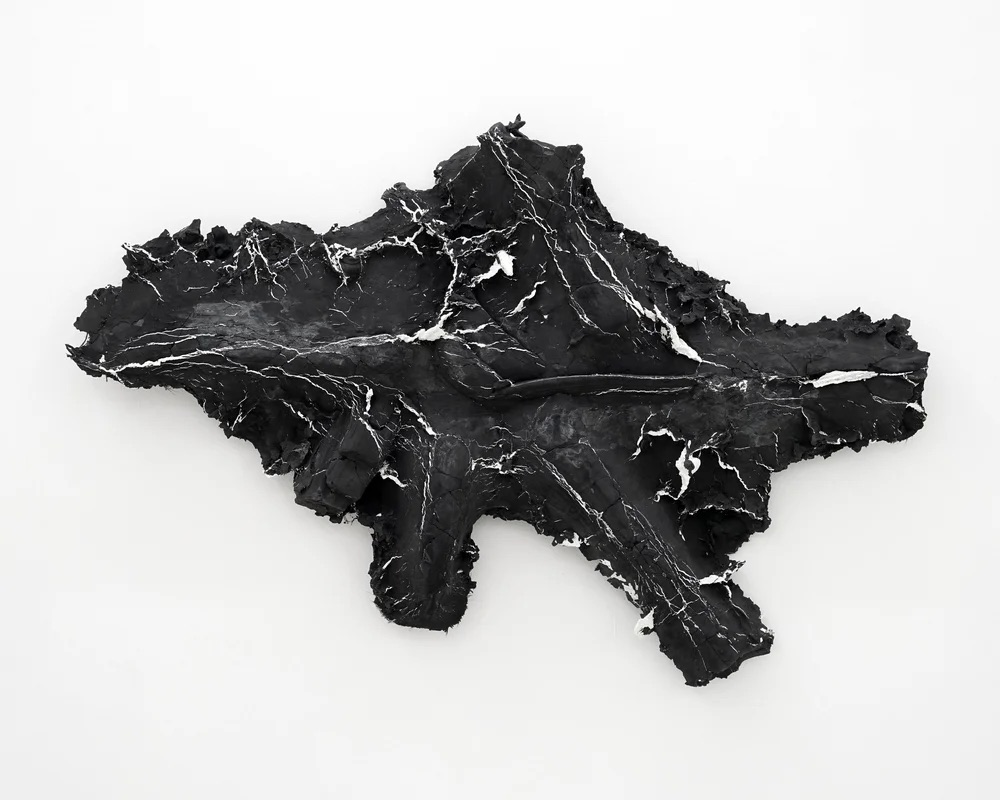
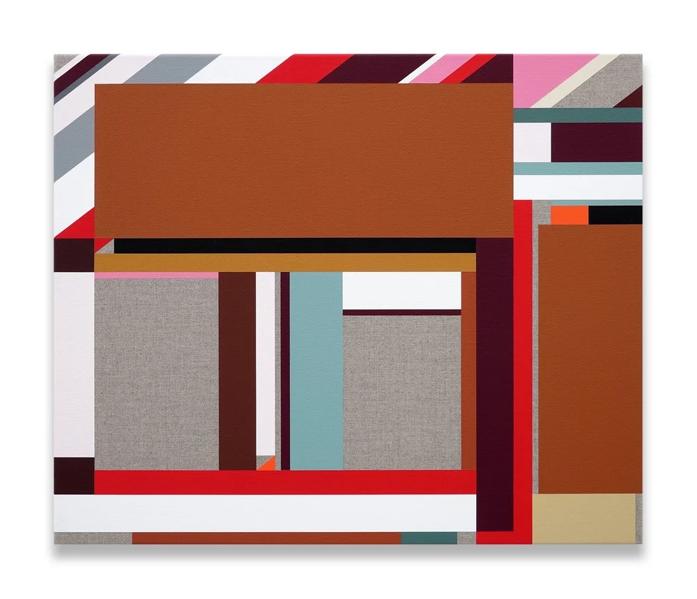
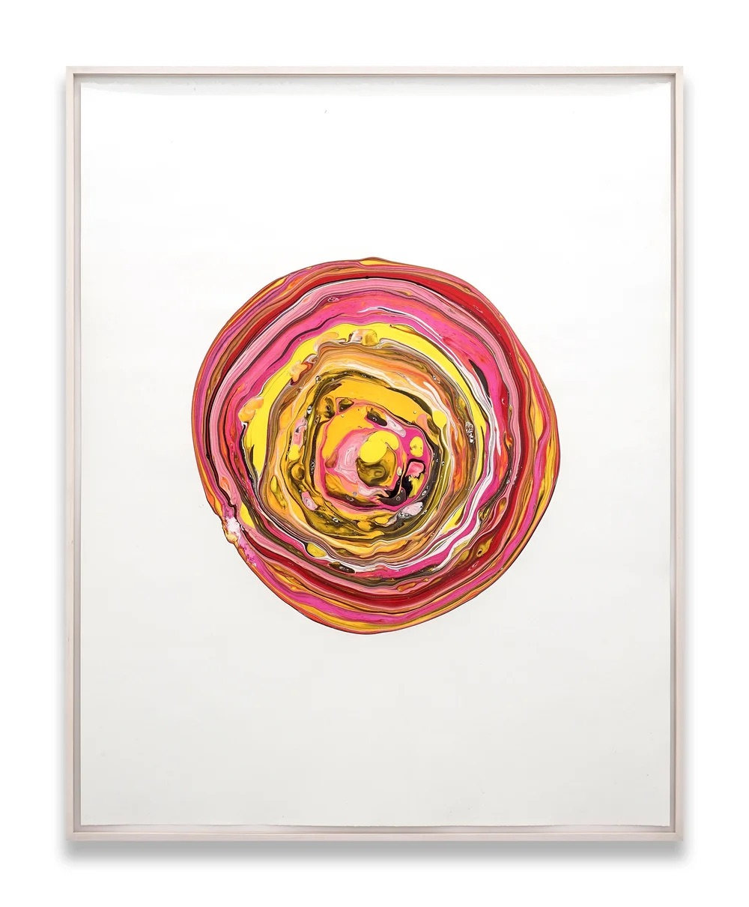
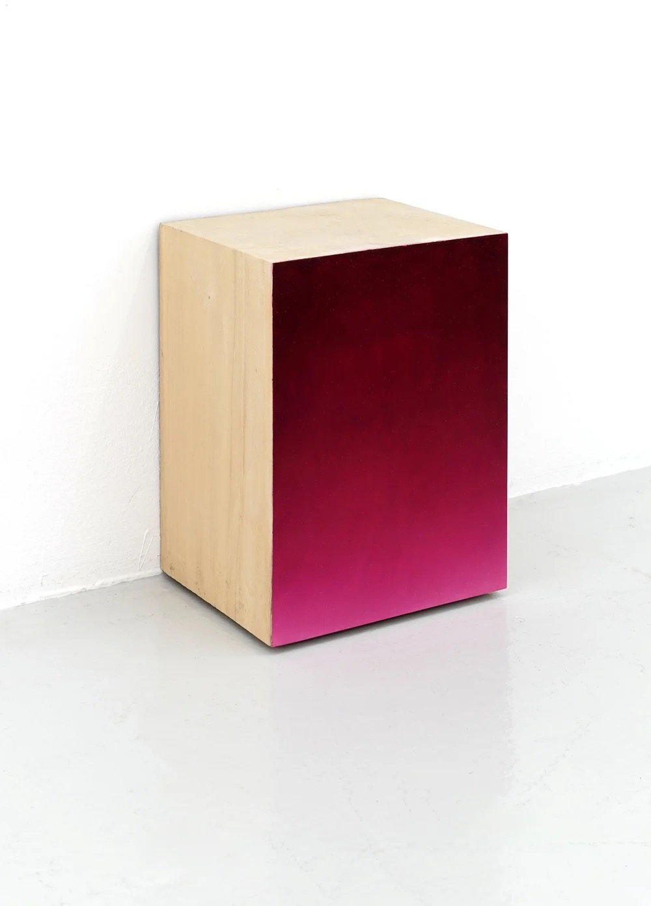
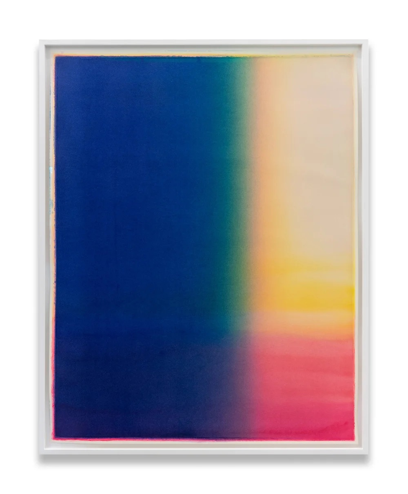
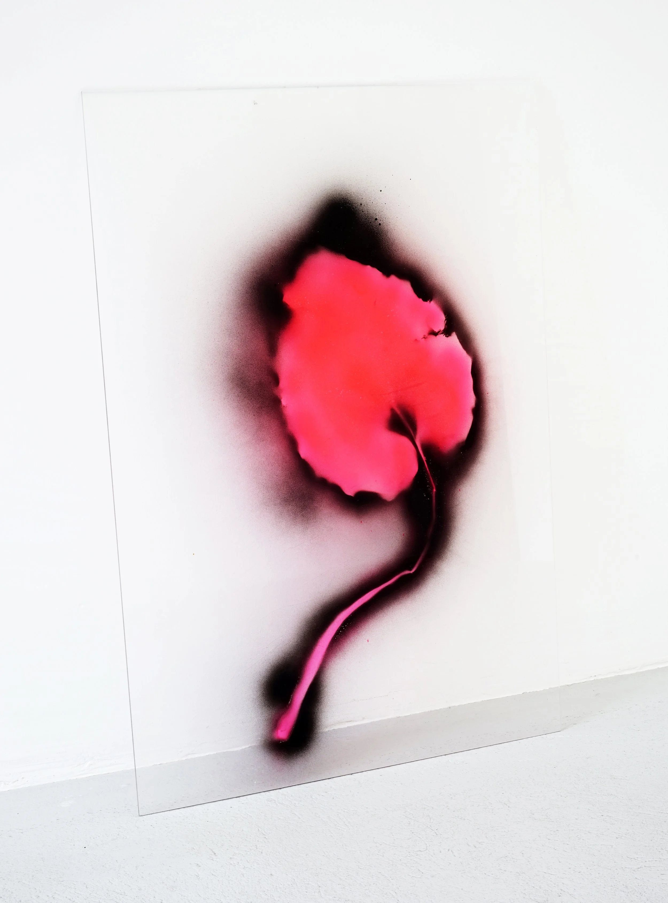

fragments of narration
with works by Anne-Lise Coste, Slawomir Elsner, Franziska Furter, Clare Goodwin, Bob Gramsma, Rachel Lumsden, Koka Ramishvili and others. Opening: Thursday, 28 May 2026, 5 to 8pm





